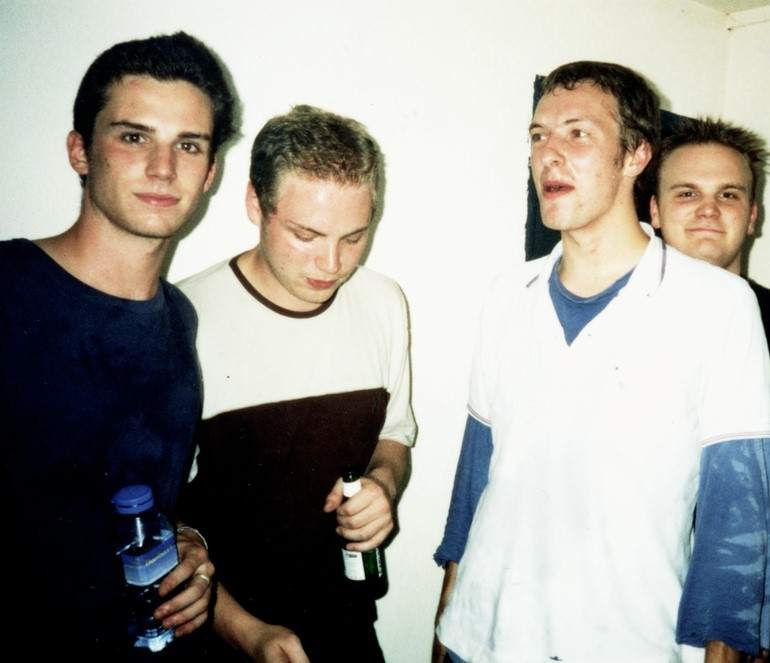

Coldplay: A Journey Through Music
Formed in 1997 in London, Coldplay is one of the most iconic bands of the 21st century. The group began when lead vocalist Chris Martin and guitarist Jonny Buckland met during their first week at University College London. Shortly after, bassist Guy Berryman and drummer Will Champion joined the lineup, and the band was complete.
Their early years were marked by relentless hard work and a focus on creating soulful, melodic music. Coldplay gained critical acclaim with the release of their debut album, Parachutes (2000), featuring the hit single "Yellow." The album won a Grammy Award and set the stage for their global success.

Image of Coldplay in their early days
Achievements and Milestones
| Category | Details |
|---|---|
| Album Sales | Sold over 100 million albums globally. |
| Best-Selling Albums in the UK | "Parachutes" (2000), "A Rush of Blood to the Head" (2002), and "X&Y" (2005) among the 50 best-selling albums in the UK. |
| Digital Sales | "Viva la Vida" album was the best-selling digital record of the 2000s. |
| Streaming Milestone | First band to surpass a billion streams on Spotify in 2014. |
| Glastonbury Record | Headlined Glastonbury Festival for the fourth time in 2016, a record for any musician. |
| Touring Revenue | Surpassed $1 billion earned from touring in 2022. |
| Highest-Grossing Tours | "A Head Full of Dreams Tour" and "Music of the Spheres World Tour" among the highest-grossing concert tours of all time. |
| Awards and Nominations | Most awarded and nominated group at the Brit Awards (9 wins from 30 nominations). |
| Grammy Awards | 7 Grammy Awards from 39 nominations, including Song of the Year and Record of the Year. |
| Career Recognition | Received NRJ Award of Honour in 2009 and named Songwriters of the Year at ASCAP in 2010. |
| Other Awards | 2 American Music Awards, 8 Billboard Music Awards, 7 MTV Video Music Awards, 3 Juno Awards. |
Meet the Band Members

Chris Martin
Lead vocalist, pianist, and the creative visionary behind Coldplay's poetic lyrics and melodies.

Jonny Buckland
Lead guitarist, known for his distinctive riffs that define Coldplay's sound.

Guy Berryman
Bassist, providing the rich undertones that balance Coldplay's compositions.

Will Champion
Drummer and multi-instrumentalist, adding depth and rhythm to the band’s music.